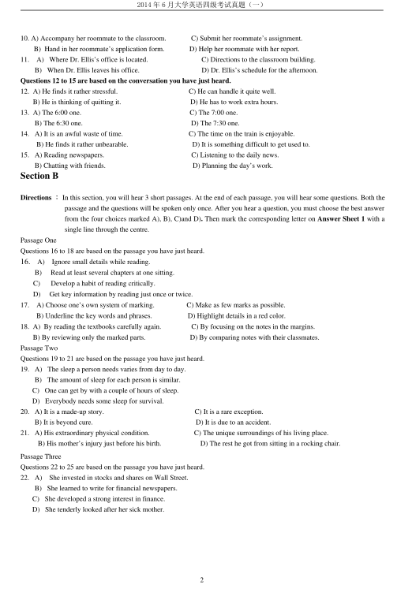
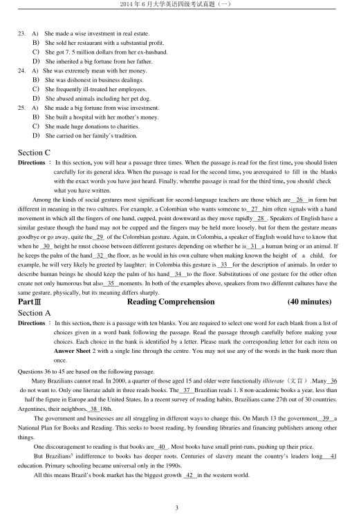
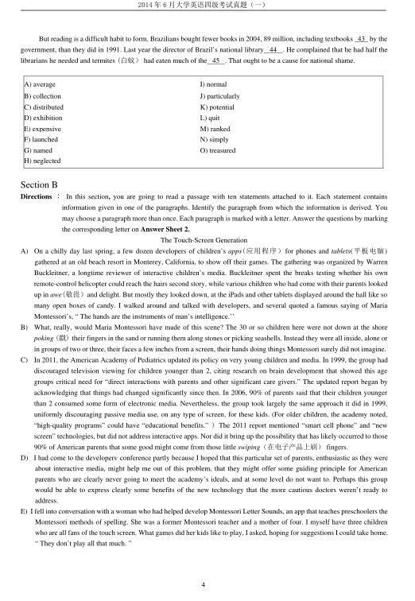
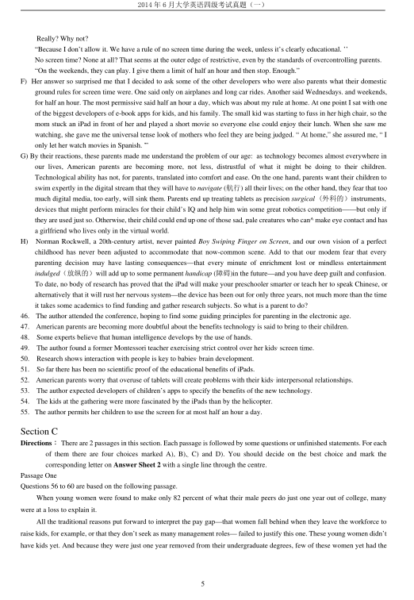
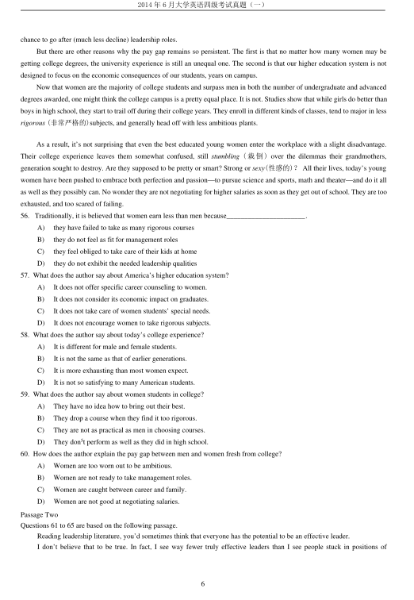
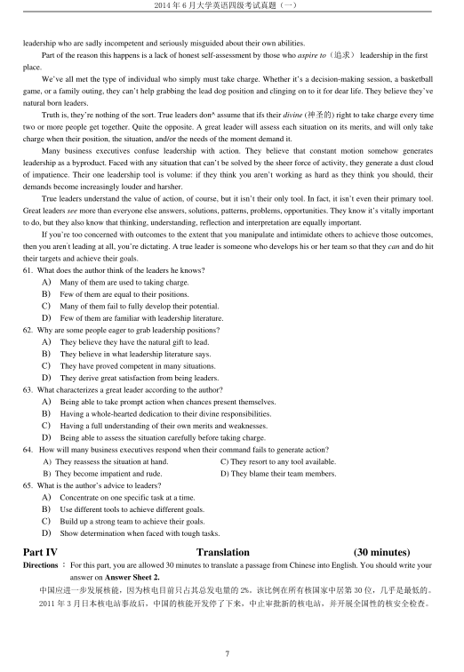

第 1 / 8 页

2014 年6 月大学英语四级考试真题（一）
1
2014 年6 月大学英语四级考试真题（第1 套)
Part I
Writing
(30 minutes)
Directions ：For this part, you are allowed 30 minutes to write a short essay on the following question. You should write at least
120 words but no more than 180 words.
Suppose a foreign friend of yours is coming to visit your hometown, what is the most interesting place
you would like to take him/her to see and why?
Part II
Listening Comprehension
(30 minutes)
Section A
Directions ：In this section, you will hear 8 short conversations and 2 long conversations. At the end of each conversation, one
or more questions will be asked about what was said. Both the conversation and the questions will be spoken only once. After
each question there will be a pause. During the pause, you must read the four choices marked A),B), C) and D), and decide which
is the best answer. Then mark the corresponding letter on Answer Sheet 1 with a single line through the centre.
1. A)
See a doctor about her strained shoulder.
C)
Replace the cupboard with a new one.
B）
Use a ladder to help her reach the tea.
D)
Place the tea on a lower shelf next time.
2. A)
At Mary Johnson’s.
C)
In an exhibition hall.
B)
At a painter’s studio.
D) Outside an art gallery.
3. A)
The teacher evaluated lacks teaching experience.
B)
She does not quite agree with what the man said.
C)
The man had better talk with the students himself.
D)
New students usually cannot offer a fair evaluation.
4. A)
He helped Doris build up the furniture.
C)
Doris fixed up some of the bookshelves.
B)
Doris helped him arrange the furniture.
D)
He was good at assembling bookshelves.
5. A)
He doesn’t get on with the others.
C)
He has been taken for a fool.
B)
He doesn’t feel at ease in the firm.
D)
He has found a better position.
6. A)
They should finish the work as soon as possible.
B)
He will continue to work in the garden himself.
C)
He is tired of doing gardening on weekends.
D)
They can hire a gardener to do the work.
7. A)
The man has to get rid of the used furniture.
B)
The man’s apartment is ready for rent.
C)
furniture is covered with lots of dust.
D)
The furniture the man bought is inexpensive.
8. A)
The man will give the mechanic a call.
C) The woman is doing some repairs.
B)
The woman is waiting for a call.
D) The man knows the mechanic very well.
Questions 9 to 11 are based on the conversation you have just heard.
9.
A) She had a job interview to attend.
C) She had to attend an important meeting.
B) She was busy finishing her project.
D) She was in the middle of writing an essay.
查看 / 复制本页文字
2014 年6 月大学英语四级考试真题（一） 1 2014 年6 月大学英语四级考试真题（第1 套) Part I Writing (30 minutes) Directions ：For this part, you are allowed 30 minutes to write a short essay on the following question. You should write at least 120 words but no more than 180 words. Suppose a foreign friend of yours is coming to visit your hometown, what is the most interesting place you would like to take him/her to see and why? Part II Listening Comprehension (30 minutes) Section A Directions ：In this section, you will hear 8 short conversations and 2 long conversations. At the end of each conversation, one or more questions will be asked about what was said. Both the conversation and the questions will be spoken only once. After each question there will be a pause. During the pause, you must read the four choices marked A),B), C) and D), and decide which is the best answer. Then mark the corresponding letter on Answer Sheet 1 with a single line through the centre. 1. A) See a doctor about her strained shoulder. C) Replace the cupboard with a new one. B） Use a ladder to help her reach the tea. D) Place the tea on a lower shelf next time. 2. A) At Mary Johnson’s. C) In an exhibition hall. B) At a painter’s studio. D) Outside an art gallery. 3. A) The teacher evaluated lacks teaching experience. B) She does not quite agree with what the man said. C) The man had better talk with the students himself. D) New students usually cannot offer a fair evaluation. 4. A) He helped Doris build up the furniture. C) Doris fixed up some of the bookshelves. B) Doris helped him arrange the furniture. D) He was good at assembling bookshelves. 5. A) He doesn’t get on with the others. C) He has been taken for a fool. B) He doesn’t feel at ease in the firm. D) He has found a better position. 6. A) They should finish the work as soon as possible. B) He will continue to work in the garden himself. C) He is tired of doing gardening on weekends. D) They can hire a gardener to do the work. 7. A) The man has to get rid of the used furniture. B) The man’s apartment is ready for rent. C) furniture is covered with lots of dust. D) The furniture the man bought is inexpensive. 8. A) The man will give the mechanic a call. C) The woman is doing some repairs. B) The woman is waiting for a call. D) The man knows the mechanic very well. Questions 9 to 11 are based on the conversation you have just heard. 9. A) She had a job interview to attend. C) She had to attend an important meeting. B) She was busy finishing her project. D) She was in the middle of writing an essay.
第 2 / 8 页

2014 年6 月大学英语四级考试真题（一）
2
10. A) Accompany her roommate to the classroom.
C) Submit her roommate’s assignment.
B) Hand in her roommate’s application form.
D) Help her roommate with her report.
11.
A) Where Dr. Ellis’s office is located.
C) Directions to the classroom building.
B) When Dr. Ellis leaves his office.
D) Dr. Ellis’s schedule for the afternoon.
Questions 12 to 15 are based on the conversation you have just heard.
12. A) He finds it rather stressful.
C) He can handle it quite well.
B) He is thinking of quitting it.
D) He has to work extra hours.
13. A) The 6:00 one.
C) The 7:00 one.
B) The 6:30 one.
D) The 7:30 one.
14. A) It is an awful waste of time.
C) The time on the train is enjoyable.
B) He finds it rather unbearable.
D) It is something difficult to get used to.
15. A) Reading newspapers.
C) Listening to the daily news.
B) Chatting with friends.
D) Planning the day’s work.
Section B
Directions ：In this section, you will hear 3 short passages. At the end of each passage, you will hear some questions. Both the
passage and the questions will be spoken only once. After you hear a question, you must choose the best answer
from the four choices marked A), B), C)and D). Then mark the corresponding letter on Answer Sheet 1 with a
single line through the centre.
Passage One
Questions 16 to 18 are based on the passage you have just heard.
16.
A)
Ignore small details while reading.
B)
Read at least several chapters at one sitting.
C)
Develop a habit of reading critically.
D)
Get key information by reading just once or twice.
17.
A) Choose one’s own system of marking.
C) Make as few marks as possible.
B) Underline the key words and phrases.
D) Highlight details in a red color.
18. A) By reading the textbooks carefully again.
C) By focusing on the notes in the margins.
B) By reviewing only the marked parts.
D) By comparing notes with their classmates.
Passage Two
Questions 19 to 21 are based on the passage you have just heard.
19. A) The sleep a person needs varies from day to day.
B) The amount of sleep for each person is similar.
C) One can get by with a couple of hours of sleep.
D) Everybody needs some sleep for survival.
20. A) It is a made-up story.
C) It is a rare exception.
B) It is beyond cure.
D) It is due to an accident.
21. A) His extraordinary physical condition.
C) The unique surroundings of his living place.
B) His mother’s injury just before his birth.
D) The rest he got from sitting in a rocking chair.
Passage Three
Questions 22 to 25 are based on the passage you have just heard.
22. A)
She invested in stocks and shares on Wall Street.
B) She learned to write for financial newspapers.
C) She developed a strong interest in finance.
D) She tenderly looked after her sick mother.
查看 / 复制本页文字
2014 年6 月大学英语四级考试真题（一） 2 10. A) Accompany her roommate to the classroom. C) Submit her roommate’s assignment. B) Hand in her roommate’s application form. D) Help her roommate with her report. 11. A) Where Dr. Ellis’s office is located. C) Directions to the classroom building. B) When Dr. Ellis leaves his office. D) Dr. Ellis’s schedule for the afternoon. Questions 12 to 15 are based on the conversation you have just heard. 12. A) He finds it rather stressful. C) He can handle it quite well. B) He is thinking of quitting it. D) He has to work extra hours. 13. A) The 6:00 one. C) The 7:00 one. B) The 6:30 one. D) The 7:30 one. 14. A) It is an awful waste of time. C) The time on the train is enjoyable. B) He finds it rather unbearable. D) It is something difficult to get used to. 15. A) Reading newspapers. C) Listening to the daily news. B) Chatting with friends. D) Planning the day’s work. Section B Directions ：In this section, you will hear 3 short passages. At the end of each passage, you will hear some questions. Both the passage and the questions will be spoken only once. After you hear a question, you must choose the best answer from the four choices marked A), B), C)and D). Then mark the corresponding letter on Answer Sheet 1 with a single line through the centre. Passage One Questions 16 to 18 are based on the passage you have just heard. 16. A) Ignore small details while reading. B) Read at least several chapters at one sitting. C) Develop a habit of reading critically. D) Get key information by reading just once or twice. 17. A) Choose one’s own system of marking. C) Make as few marks as possible. B) Underline the key words and phrases. D) Highlight details in a red color. 18. A) By reading the textbooks carefully again. C) By focusing on the notes in the margins. B) By reviewing only the marked parts. D) By comparing notes with their classmates. Passage Two Questions 19 to 21 are based on the passage you have just heard. 19. A) The sleep a person needs varies from day to day. B) The amount of sleep for each person is similar. C) One can get by with a couple of hours of sleep. D) Everybody needs some sleep for survival. 20. A) It is a made-up story. C) It is a rare exception. B) It is beyond cure. D) It is due to an accident. 21. A) His extraordinary physical condition. C) The unique surroundings of his living place. B) His mother’s injury just before his birth. D) The rest he got from sitting in a rocking chair. Passage Three Questions 22 to 25 are based on the passage you have just heard. 22. A) She invested in stocks and shares on Wall Street. B) She learned to write for financial newspapers. C) She developed a strong interest in finance. D) She tenderly looked after her sick mother.
第 3 / 8 页

2014 年6 月大学英语四级考试真题（一）
3
23.
A)
She made a wise investment in real estate.
B)
She sold her restaurant with a substantial profit.
C)
She got 7. 5 million dollars from her ex-husband.
D)
She inherited a big fortune from her father.
24.
A) She was extremely mean with her money.
B)
She was dishonest in business dealings.
C)
She frequently ill-treated her employees.
D)
She abused animals including her pet dog.
25.
A)
She made a big fortune from wise investment.
B)
She built a hospital with her mother’s money.
C)
She made huge donations to charities.
D)
She carried on her family’s tradition.
Section C
Directions ：In this section, you will hear a passage three times. When the passage is read for the first time, you should listen
carefully for its general idea. When the passage is read for the second time, you arerequired to fill in the blanks
with the exact words you have just heard. Finally, whenthe passage is read for the third time, you should check
what you have written.
Among the kinds of social gestures most significant for second-language teachers are those which are
26
in form but
different in meaning in the two cultures. For example, a Colombian who wants someone to
27
him often signals with a hand
movement in which all the fingers of one hand, cupped, point downward as they move rapidly 28 . Speakers of English have a
similar gesture though the hand may not be cupped and the fingers may be held more loosely, but for them the gesture means
goodbye or go away, quite the 29 of the Colombian gesture. Again, in Colombia, a speaker of English would have to know that
when he 30 height he must choose between different gestures depending on whether he is 31 a human being or an animal. If
he keeps the palm of the hand 32 the floor, as he would in his own culture when making known the height of
a
child,
for
example, he will very likely be greeted by laughter; in Colombia this gesture is 33
for the description of animals. In order to
describe human beings he should keep the palm of his hand
34
to the floor. Substitutions of one gesture for the other often
create not only humorous but also 35 moments. In both of the examples above, speakers from two different cultures have the
same gesture, physically, but its meaning differs sharply.
PartⅢ
Reading Comprehension
(40 minutes)
Section A
Directions ：In this section, there is a passage with ten blanks. You are required to select one word for each blank from a list of
choices given in a word bank following the passage. Read the passage through carefully before making your
choices. Each choice in the bank is identified by a letter. Please mark the corresponding letter for each item on
Answer Sheet 2 with a single line through the centre. You may not use any of the words in the bank more than
once.
Questions 36 to 45 are based on the following passage.
Many Brazilians cannot read. In 2000, a quarter of those aged 15 and older were functionally illiterate (文盲）.Many 36
do not want to. Only one literate adult in three reads books. The 37 Brazilian reads 1. 8 non-academic books a year, less than
half the figure in Europe and the United States. In a recent survey of reading habits, Brazilians came 27th out of 30 countries.
Argentines, their neighbors, 38 18th.
The government and businesses are all struggling in different ways to change this. On March 13 the government
39
a
National Plan for Books and Reading. This seeks to boost reading, by founding libraries and financing publishers among other
things.
One discouragement to reading is that books are 40 . Most books have small print-runs, pushing up their price.
But Brazilians5 indifference to books has deeper roots. Centuries of slavery meant the country’s leaders long
41
education. Primary schooling became universal only in the 1990s.
All this means Brazil’s book market has the biggest growth 42 in the western world.
查看 / 复制本页文字
2014 年6 月大学英语四级考试真题（一） 3 23. A) She made a wise investment in real estate. B) She sold her restaurant with a substantial profit. C) She got 7. 5 million dollars from her ex-husband. D) She inherited a big fortune from her father. 24. A) She was extremely mean with her money. B) She was dishonest in business dealings. C) She frequently ill-treated her employees. D) She abused animals including her pet dog. 25. A) She made a big fortune from wise investment. B) She built a hospital with her mother’s money. C) She made huge donations to charities. D) She carried on her family’s tradition. Section C Directions ：In this section, you will hear a passage three times. When the passage is read for the first time, you should listen carefully for its general idea. When the passage is read for the second time, you arerequired to fill in the blanks with the exact words you have just heard. Finally, whenthe passage is read for the third time, you should check what you have written. Among the kinds of social gestures most significant for second-language teachers are those which are 26 in form but different in meaning in the two cultures. For example, a Colombian who wants someone to 27 him often signals with a hand movement in which all the fingers of one hand, cupped, point downward as they move rapidly 28 . Speakers of English have a similar gesture though the hand may not be cupped and the fingers may be held more loosely, but for them the gesture means goodbye or go away, quite the 29 of the Colombian gesture. Again, in Colombia, a speaker of English would have to know that when he 30 height he must choose between different gestures depending on whether he is 31 a human being or an animal. If he keeps the palm of the hand 32 the floor, as he would in his own culture when making known the height of a child, for example, he will very likely be greeted by laughter; in Colombia this gesture is 33 for the description of animals. In order to describe human beings he should keep the palm of his hand 34 to the floor. Substitutions of one gesture for the other often create not only humorous but also 35 moments. In both of the examples above, speakers from two different cultures have the same gesture, physically, but its meaning differs sharply. PartⅢ Reading Comprehension (40 minutes) Section A Directions ：In this section, there is a passage with ten blanks. You are required to select one word for each blank from a list of choices given in a word bank following the passage. Read the passage through carefully before making your choices. Each choice in the bank is identified by a letter. Please mark the corresponding letter for each item on Answer Sheet 2 with a single line through the centre. You may not use any of the words in the bank more than once. Questions 36 to 45 are based on the following passage. Many Brazilians cannot read. In 2000, a quarter of those aged 15 and older were functionally illiterate (文盲）.Many 36 do not want to. Only one literate adult in three reads books. The 37 Brazilian reads 1. 8 non-academic books a year, less than half the figure in Europe and the United States. In a recent survey of reading habits, Brazilians came 27th out of 30 countries. Argentines, their neighbors, 38 18th. The government and businesses are all struggling in different ways to change this. On March 13 the government 39 a National Plan for Books and Reading. This seeks to boost reading, by founding libraries and financing publishers among other things. One discouragement to reading is that books are 40 . Most books have small print-runs, pushing up their price. But Brazilians5 indifference to books has deeper roots. Centuries of slavery meant the country’s leaders long 41 education. Primary schooling became universal only in the 1990s. All this means Brazil’s book market has the biggest growth 42 in the western world.
第 4 / 8 页

2014 年6 月大学英语四级考试真题（一）
4
But reading is a difficult habit to form. Brazilians bought fewer books in 2004, 89 million, including textbooks 43 by the
government, than they did in 1991. Last year the director of Brazil’s national library
44
. He complained that he had half the
librarians he needed and termites (白蚁）had eaten much of the 45 . That ought to be a cause for national shame.
Section B
Directions ：In this section, you are going to read a passage with ten statements attached to it. Each statement contains
information given in one of the paragraphs. Identify the paragraph from which the information is derived. You
may choose a paragraph more than once. Each paragraph is marked with a letter. Answer the questions by marking
the corresponding letter on Answer Sheet 2.
The Touch-Screen Generation
A)
On a chilly day last spring, a few dozen developers of children’s apps(应用程序）for phones and tablets(平板电脑)
gathered at an old beach resort in Monterey, California, to show off their games. The gathering was organized by Warren
Buckleitner, a longtime reviewer of interactive children’s media. Buckleitner spent the breaks testing whether his own
remote-control helicopter could reach the hairs second story, while various children who had come with their parents looked
up in awe(敬畏）and delight. But mostly they looked down, at the iPads and other tablets displayed around the hall like so
many open boxes of candy. I walked around and talked with developers, and several quoted a famous saying of Maria
Montessori’s, “ The hands are the instruments of man’s intelligence.’’
B)
What, really, would Maria Montessori have made of this scene? The 30 or so children here were not down at the shore
poking (戳) their fingers in the sand or running them along stones or picking seashells. Instead they were all inside, alone or
in groups of two or three, their faces a few inches from a screen, their hands doing things Montessori surely did not imagine.
C)
In 2011, the American Academy of Pediatrics updated its policy on very young children and media. In 1999, the group had
discouraged television viewing for children younger than 2, citing research on brain development that showed this age
groups critical need for “direct interactions with parents and other significant care givers.” The updated report began by
acknowledging that things had changed significantly since then. In 2006, 90% of parents said that their children younger
than 2 consumed some form of electronic media. Nevertheless, the group took largely the same approach it did in 1999,
uniformly discouraging passive media use, on any type of screen, for these kids. (For older children, the academy noted,
“high-quality programs” could have “educational benefits.” ）The 2011 report mentioned “smart cell phone” and “new
screen” technologies, but did not address interactive apps. Nor did it bring up the possibility that has likely occurred to those
90% of American parents that some good might come from those little swiping（在电子产品上刷）fingers.
D)
I had come to the developers, conference partly because I hoped that this particular set of parents, enthusiastic as they were
about interactive media, might help me out of this problem, that they might offer some guiding principle for American
parents who are clearly never going to meet the academy’s ideals, and at some level do not want to. Perhaps this group
would be able to express clearly some benefits of the new technology that the more cautious doctors weren’t ready to
address.
E) I fell into conversation with a woman who had helped develop Montessori Letter Sounds, an app that teaches preschoolers the
Montessori methods of spelling. She was a former Montessori teacher and a mother of four. I myself have three children
who are all fans of the touch screen. What games did her kids like to play, I asked, hoping for suggestions I could take home.
“ They don’t play all that much. ”
A) average
I) normal
B) collection
J) particularly
C) distributed
K) potential
D) exhibition
L) quit
E) expensive
M) ranked
F) launched
N) simply
G) named
O) treasured
H) neglected
查看 / 复制本页文字
2014 年6 月大学英语四级考试真题（一） 4 But reading is a difficult habit to form. Brazilians bought fewer books in 2004, 89 million, including textbooks 43 by the government, than they did in 1991. Last year the director of Brazil’s national library 44 . He complained that he had half the librarians he needed and termites (白蚁）had eaten much of the 45 . That ought to be a cause for national shame. Section B Directions ：In this section, you are going to read a passage with ten statements attached to it. Each statement contains information given in one of the paragraphs. Identify the paragraph from which the information is derived. You may choose a paragraph more than once. Each paragraph is marked with a letter. Answer the questions by marking the corresponding letter on Answer Sheet 2. The Touch-Screen Generation A) On a chilly day last spring, a few dozen developers of children’s apps(应用程序）for phones and tablets(平板电脑) gathered at an old beach resort in Monterey, California, to show off their games. The gathering was organized by Warren Buckleitner, a longtime reviewer of interactive children’s media. Buckleitner spent the breaks testing whether his own remote-control helicopter could reach the hairs second story, while various children who had come with their parents looked up in awe(敬畏）and delight. But mostly they looked down, at the iPads and other tablets displayed around the hall like so many open boxes of candy. I walked around and talked with developers, and several quoted a famous saying of Maria Montessori’s, “ The hands are the instruments of man’s intelligence.’’ B) What, really, would Maria Montessori have made of this scene? The 30 or so children here were not down at the shore poking (戳) their fingers in the sand or running them along stones or picking seashells. Instead they were all inside, alone or in groups of two or three, their faces a few inches from a screen, their hands doing things Montessori surely did not imagine. C) In 2011, the American Academy of Pediatrics updated its policy on very young children and media. In 1999, the group had discouraged television viewing for children younger than 2, citing research on brain development that showed this age groups critical need for “direct interactions with parents and other significant care givers.” The updated report began by acknowledging that things had changed significantly since then. In 2006, 90% of parents said that their children younger than 2 consumed some form of electronic media. Nevertheless, the group took largely the same approach it did in 1999, uniformly discouraging passive media use, on any type of screen, for these kids. (For older children, the academy noted, “high-quality programs” could have “educational benefits.” ）The 2011 report mentioned “smart cell phone” and “new screen” technologies, but did not address interactive apps. Nor did it bring up the possibility that has likely occurred to those 90% of American parents that some good might come from those little swiping（在电子产品上刷）fingers. D) I had come to the developers, conference partly because I hoped that this particular set of parents, enthusiastic as they were about interactive media, might help me out of this problem, that they might offer some guiding principle for American parents who are clearly never going to meet the academy’s ideals, and at some level do not want to. Perhaps this group would be able to express clearly some benefits of the new technology that the more cautious doctors weren’t ready to address. E) I fell into conversation with a woman who had helped develop Montessori Letter Sounds, an app that teaches preschoolers the Montessori methods of spelling. She was a former Montessori teacher and a mother of four. I myself have three children who are all fans of the touch screen. What games did her kids like to play, I asked, hoping for suggestions I could take home. “ They don’t play all that much. ” A) average I) normal B) collection J) particularly C) distributed K) potential D) exhibition L) quit E) expensive M) ranked F) launched N) simply G) named O) treasured H) neglected
第 5 / 8 页

2014 年6 月大学英语四级考试真题（一）
5
Really? Why not?
“Because I don’t allow it. We have a rule of no screen time during the week, unless it’s clearly educational. ’’
No screen time? None at all? That seems at the outer edge of restrictive, even by the standards of overcontrolling parents.
“On the weekends, they can play. I give them a limit of half an hour and then stop. Enough.”
F) Her answer so surprised me that I decided to ask some of the other developers who were also parents what their domestic
ground rules for screen time were. One said only on airplanes and long car rides. Another said Wednesdays. and weekends,
for half an hour. The most permissive said half an hour a day, which was about my rule at home. At one point I sat with one
of the biggest developers of e-book apps for kids, and his family. The small kid was starting to fuss in her high chair, so the
mom stuck an iPad in front of her and played a short movie so everyone else could enjoy their lunch. When she saw me
watching, she gave me the universal tense look of mothers who feel they are being judged. “ At home,” she assured me, “ I
only let her watch movies in Spanish. ’”
G) By their reactions, these parents made me understand the problem of our age: as technology becomes almost everywhere in
our lives, American parents are becoming more, not less, distrustful of what it might be doing to their children.
Technological ability has not, for parents, translated into comfort and ease. On the one hand, parents want their children to
swim expertly in the digital stream that they will have to navigate (航行) all their lives; on the other hand, they fear that too
much digital media, too early, will sink them. Parents end up treating tablets as precision surgical (外科的）instruments,
devices that might perform miracles for their child’s IQ and help him win some great robotics competition——but only if
they are used just so. Otherwise, their child could end up one of those sad, pale creatures who can^ make eye contact and has
a girlfriend who lives only in the virtual world.
H)
Norman Rockwell, a 20th-century artist, never painted Boy Swiping Finger on Screen, and our own vision of a perfect
childhood has never been adjusted to accommodate that now-common scene. Add to that our modem fear that every
parenting decision may have lasting consequences—that every minute of enrichment lost or mindless entertainment
indulged（放纵的）will add up to some permanent handicap (障碍)in the future—and you have deep guilt and confusion.
To date, no body of research has proved that the iPad will make your preschooler smarter or teach her to speak Chinese, or
alternatively that it will rust her nervous system—the device has been out for only three years, not much more than the time
it takes some academics to find funding and gather research subjects. So what is a parent to do?
46.
The author attended the conference, hoping to find some guiding principles for parenting in the electronic age.
47.
American parents are becoming more doubtful about the benefits technology is said to bring to their children.
48.
Some experts believe that human intelligence develops by the use of hands.
49.
The author found a former Montessori teacher exercising strict control over her kids, screen time.
50.
Research shows interaction with people is key to babies, brain development.
51.
So far there has been no scientific proof of the educational benefits of iPads.
52.
American parents worry that overuse of tablets will create problems with their kids, interpersonal relationships.
53.
The author expected developers of children’s apps to specify the benefits of the new technology.
54.
The kids at the gathering were more fascinated by the iPads than by the helicopter.
55. The author permits her children to use the screen for at most half an hour a day.
Section C
Directions：There are 2 passages in this section. Each passage is followed by some questions or unfinished statements. For each
of them there are four choices marked A), B),, C) and D). You should decide on the best choice and mark the
corresponding letter on Answer Sheet 2 with a single line through the centre.
Passage One
Questions 56 to 60 are based on the following passage.
When young women were found to make only 82 percent of what their male peers do just one year out of college, many
were at a loss to explain it.
All the traditional reasons put forward to interpret the pay gap—that women fall behind when they leave the workforce to
raise kids, for example, or that they don’t seek as many management roles— failed to justify this one. These young women didn’t
have kids yet. And because they were just one year removed from their undergraduate degrees, few of these women yet had the
查看 / 复制本页文字
2014 年6 月大学英语四级考试真题（一） 5 Really? Why not? “Because I don’t allow it. We have a rule of no screen time during the week, unless it’s clearly educational. ’’ No screen time? None at all? That seems at the outer edge of restrictive, even by the standards of overcontrolling parents. “On the weekends, they can play. I give them a limit of half an hour and then stop. Enough.” F) Her answer so surprised me that I decided to ask some of the other developers who were also parents what their domestic ground rules for screen time were. One said only on airplanes and long car rides. Another said Wednesdays. and weekends, for half an hour. The most permissive said half an hour a day, which was about my rule at home. At one point I sat with one of the biggest developers of e-book apps for kids, and his family. The small kid was starting to fuss in her high chair, so the mom stuck an iPad in front of her and played a short movie so everyone else could enjoy their lunch. When she saw me watching, she gave me the universal tense look of mothers who feel they are being judged. “ At home,” she assured me, “ I only let her watch movies in Spanish. ’” G) By their reactions, these parents made me understand the problem of our age: as technology becomes almost everywhere in our lives, American parents are becoming more, not less, distrustful of what it might be doing to their children. Technological ability has not, for parents, translated into comfort and ease. On the one hand, parents want their children to swim expertly in the digital stream that they will have to navigate (航行) all their lives; on the other hand, they fear that too much digital media, too early, will sink them. Parents end up treating tablets as precision surgical (外科的）instruments, devices that might perform miracles for their child’s IQ and help him win some great robotics competition——but only if they are used just so. Otherwise, their child could end up one of those sad, pale creatures who can^ make eye contact and has a girlfriend who lives only in the virtual world. H) Norman Rockwell, a 20th-century artist, never painted Boy Swiping Finger on Screen, and our own vision of a perfect childhood has never been adjusted to accommodate that now-common scene. Add to that our modem fear that every parenting decision may have lasting consequences—that every minute of enrichment lost or mindless entertainment indulged（放纵的）will add up to some permanent handicap (障碍)in the future—and you have deep guilt and confusion. To date, no body of research has proved that the iPad will make your preschooler smarter or teach her to speak Chinese, or alternatively that it will rust her nervous system—the device has been out for only three years, not much more than the time it takes some academics to find funding and gather research subjects. So what is a parent to do? 46. The author attended the conference, hoping to find some guiding principles for parenting in the electronic age. 47. American parents are becoming more doubtful about the benefits technology is said to bring to their children. 48. Some experts believe that human intelligence develops by the use of hands. 49. The author found a former Montessori teacher exercising strict control over her kids, screen time. 50. Research shows interaction with people is key to babies, brain development. 51. So far there has been no scientific proof of the educational benefits of iPads. 52. American parents worry that overuse of tablets will create problems with their kids, interpersonal relationships. 53. The author expected developers of children’s apps to specify the benefits of the new technology. 54. The kids at the gathering were more fascinated by the iPads than by the helicopter. 55. The author permits her children to use the screen for at most half an hour a day. Section C Directions：There are 2 passages in this section. Each passage is followed by some questions or unfinished statements. For each of them there are four choices marked A), B),, C) and D). You should decide on the best choice and mark the corresponding letter on Answer Sheet 2 with a single line through the centre. Passage One Questions 56 to 60 are based on the following passage. When young women were found to make only 82 percent of what their male peers do just one year out of college, many were at a loss to explain it. All the traditional reasons put forward to interpret the pay gap—that women fall behind when they leave the workforce to raise kids, for example, or that they don’t seek as many management roles— failed to justify this one. These young women didn’t have kids yet. And because they were just one year removed from their undergraduate degrees, few of these women yet had the
第 6 / 8 页

2014 年6 月大学英语四级考试真题（一）
6
chance to go after (much less decline) leadership roles.
But there are other reasons why the pay gap remains so persistent. The first is that no matter how many women may be
getting college degrees, the university experience is still an unequal one. The second is that our higher education system is not
designed to focus on the economic consequences of our students, years on campus.
Now that women are the majority of college students and surpass men in both the number of undergraduate and advanced
degrees awarded, one might think the college campus is a pretty equal place. It is not. Studies show that while girls do better than
boys in high school, they start to trail off during their college years. They enroll in different kinds of classes, tend to major in less
rigorous (非常严格的)subjects, and generally head off with less ambitious plants.
As a result, it’s not surprising that even the best educated young women enter the workplace with a slight disadvantage.
Their college experience leaves them somewhat confused, still stumbling ( 栽倒) over the dilemmas their grandmothers,
generation sought to destroy. Are they supposed to be pretty or smart? Strong or sexy(性感的)？All their lives, today’s young
women have been pushed to embrace both perfection and passion—to pursue science and sports, math and theater—and do it all
as well as they possibly can. No wonder they are not negotiating for higher salaries as soon as they get out of school. They are too
exhausted, and too scared of failing.
56. Traditionally, it is believed that women earn less than men because______________________.
A)
they have failed to take as many rigorous courses
B)
they do not feel as fit for management roles
C)
they feel obliged to take care of their kids at home
D)
they do not exhibit the needed leadership qualities
57. What does the author say about America’s higher education system?
A)
It does not offer specific career counseling to women.
B)
It does not consider its economic impact on graduates.
C)
It does not take care of women students’ special needs.
D)
It does not encourage women to take rigorous subjects.
58. What does the author say about today’s college experience?
A)
It is different for male and female students.
B)
It is not the same as that of earlier generations.
C)
It is more exhausting than most women expect.
D)
It is not so satisfying to many American students.
59. What does the author say about women students in college?
A)
They have no idea how to bring out their best.
B)
They drop a course when they find it too rigorous.
C)
They are not as practical as men in choosing courses.
D)
They don5t perform as well as they did in high school.
60. How does the author explain the pay gap between men and women fresh from college?
A)
Women are too worn out to be ambitious.
B)
Women are not ready to take management roles.
C)
Women are caught between career and family.
D)
Women are not good at negotiating salaries.
Passage Two
Questions 61 to 65 are based on the following passage.
Reading leadership literature, you’d sometimes think that everyone has the potential to be an effective leader.
I don’t believe that to be true. In fact, I see way fewer truly effective leaders than I see people stuck in positions of
查看 / 复制本页文字
2014 年6 月大学英语四级考试真题（一） 6 chance to go after (much less decline) leadership roles. But there are other reasons why the pay gap remains so persistent. The first is that no matter how many women may be getting college degrees, the university experience is still an unequal one. The second is that our higher education system is not designed to focus on the economic consequences of our students, years on campus. Now that women are the majority of college students and surpass men in both the number of undergraduate and advanced degrees awarded, one might think the college campus is a pretty equal place. It is not. Studies show that while girls do better than boys in high school, they start to trail off during their college years. They enroll in different kinds of classes, tend to major in less rigorous (非常严格的)subjects, and generally head off with less ambitious plants. As a result, it’s not surprising that even the best educated young women enter the workplace with a slight disadvantage. Their college experience leaves them somewhat confused, still stumbling ( 栽倒) over the dilemmas their grandmothers, generation sought to destroy. Are they supposed to be pretty or smart? Strong or sexy(性感的)？All their lives, today’s young women have been pushed to embrace both perfection and passion—to pursue science and sports, math and theater—and do it all as well as they possibly can. No wonder they are not negotiating for higher salaries as soon as they get out of school. They are too exhausted, and too scared of failing. 56. Traditionally, it is believed that women earn less than men because______________________. A) they have failed to take as many rigorous courses B) they do not feel as fit for management roles C) they feel obliged to take care of their kids at home D) they do not exhibit the needed leadership qualities 57. What does the author say about America’s higher education system? A) It does not offer specific career counseling to women. B) It does not consider its economic impact on graduates. C) It does not take care of women students’ special needs. D) It does not encourage women to take rigorous subjects. 58. What does the author say about today’s college experience? A) It is different for male and female students. B) It is not the same as that of earlier generations. C) It is more exhausting than most women expect. D) It is not so satisfying to many American students. 59. What does the author say about women students in college? A) They have no idea how to bring out their best. B) They drop a course when they find it too rigorous. C) They are not as practical as men in choosing courses. D) They don5t perform as well as they did in high school. 60. How does the author explain the pay gap between men and women fresh from college? A) Women are too worn out to be ambitious. B) Women are not ready to take management roles. C) Women are caught between career and family. D) Women are not good at negotiating salaries. Passage Two Questions 61 to 65 are based on the following passage. Reading leadership literature, you’d sometimes think that everyone has the potential to be an effective leader. I don’t believe that to be true. In fact, I see way fewer truly effective leaders than I see people stuck in positions of
第 7 / 8 页

2014 年6 月大学英语四级考试真题（一）
7
leadership who are sadly incompetent and seriously misguided about their own abilities.
Part of the reason this happens is a lack of honest self-assessment by those who aspire to（追求）leadership in the first
place.
We’ve all met the type of individual who simply must take charge. Whether it’s a decision-making session, a basketball
game, or a family outing, they can’t help grabbing the lead dog position and clinging on to it for dear life. They believe they’ve
natural born leaders.
Truth is, they’re nothing of the sort. True leaders don^ assume that ifs their divine (神圣的) right to take charge every time
two or more people get together. Quite the opposite. A great leader will assess each situation on its merits, and will only take
charge when their position, the situation, and/or the needs of the moment demand it.
Many business executives confuse leadership with action. They believe that constant motion somehow generates
leadership as a byproduct. Faced with any situation that can’t be solved by the sheer force of activity, they generate a dust cloud
of impatience. Their one leadership tool is volume: if they think you aren’t working as hard as they think you should, their
demands become increasingly louder and harsher.
True leaders understand the value of action, of course, but it isn’t their only tool. In fact, it isn’t even their primary tool.
Great leaders see more than everyone else answers, solutions, patterns, problems, opportunities. They know it’s vitally important
to do, but they also know that thinking, understanding, reflection and interpretation are equally important.
If you’re too concerned with outcomes to the extent that you manipulate and intimidate others to achieve those outcomes,
then you aren’t leading at all, you’re dictating. A true leader is someone who develops his or her team so that they can and do hit
their targets and achieve their goals.
61. What does the author think of the leaders he knows?
A)
Many of them are used to taking charge.
B)
Few of them are equal to their positions.
C)
Many of them fail to fully develop their potential.
D)
Few of them are familiar with leadership literature.
62. Why are some people eager to grab leadership positions?
A)
They believe they have the natural gift to lead.
B)
They believe in what leadership literature says.
C)
They have proved competent in many situations.
D)
They derive great satisfaction from being leaders.
63. What characterizes a great leader according to the author?
A)
Being able to take prompt action when chances present themselves.
B)
Having a whole-hearted dedication to their divine responsibilities.
C)
Having a full understanding of their own merits and weaknesses.
D)
Being able to assess the situation carefully before taking charge.
64. How will many business executives respond when their command fails to generate action?
A) They reassess the situation at hand.
C) They resort to any tool available.
B) They become impatient and rude.
D) They blame their team members.
65. What is the author’s advice to leaders?
A)
Concentrate on one specific task at a time.
B)
Use different tools to achieve different goals.
C)
Build up a strong team to achieve their goals.
D)
Show determination when faced with tough tasks.
Part IV
Translation
(30 minutes)
Directions ：For this part, you are allowed 30 minutes to translate a passage from Chinese into English. You should write your
answer on Answer Sheet 2.
中国应进一步发展核能，因为核电目前只占其总发电量的2%。该比例在所有核国家中居第30 位，几乎是最低的。
2011 年3 月日本核电站事故后，中国的核能开发停了下来，中止审批新的核电站，并开展全国性的核安全检查。
查看 / 复制本页文字
2014 年6 月大学英语四级考试真题（一） 7 leadership who are sadly incompetent and seriously misguided about their own abilities. Part of the reason this happens is a lack of honest self-assessment by those who aspire to（追求）leadership in the first place. We’ve all met the type of individual who simply must take charge. Whether it’s a decision-making session, a basketball game, or a family outing, they can’t help grabbing the lead dog position and clinging on to it for dear life. They believe they’ve natural born leaders. Truth is, they’re nothing of the sort. True leaders don^ assume that ifs their divine (神圣的) right to take charge every time two or more people get together. Quite the opposite. A great leader will assess each situation on its merits, and will only take charge when their position, the situation, and/or the needs of the moment demand it. Many business executives confuse leadership with action. They believe that constant motion somehow generates leadership as a byproduct. Faced with any situation that can’t be solved by the sheer force of activity, they generate a dust cloud of impatience. Their one leadership tool is volume: if they think you aren’t working as hard as they think you should, their demands become increasingly louder and harsher. True leaders understand the value of action, of course, but it isn’t their only tool. In fact, it isn’t even their primary tool. Great leaders see more than everyone else answers, solutions, patterns, problems, opportunities. They know it’s vitally important to do, but they also know that thinking, understanding, reflection and interpretation are equally important. If you’re too concerned with outcomes to the extent that you manipulate and intimidate others to achieve those outcomes, then you aren’t leading at all, you’re dictating. A true leader is someone who develops his or her team so that they can and do hit their targets and achieve their goals. 61. What does the author think of the leaders he knows? A) Many of them are used to taking charge. B) Few of them are equal to their positions. C) Many of them fail to fully develop their potential. D) Few of them are familiar with leadership literature. 62. Why are some people eager to grab leadership positions? A) They believe they have the natural gift to lead. B) They believe in what leadership literature says. C) They have proved competent in many situations. D) They derive great satisfaction from being leaders. 63. What characterizes a great leader according to the author? A) Being able to take prompt action when chances present themselves. B) Having a whole-hearted dedication to their divine responsibilities. C) Having a full understanding of their own merits and weaknesses. D) Being able to assess the situation carefully before taking charge. 64. How will many business executives respond when their command fails to generate action? A) They reassess the situation at hand. C) They resort to any tool available. B) They become impatient and rude. D) They blame their team members. 65. What is the author’s advice to leaders? A) Concentrate on one specific task at a time. B) Use different tools to achieve different goals. C) Build up a strong team to achieve their goals. D) Show determination when faced with tough tasks. Part IV Translation (30 minutes) Directions ：For this part, you are allowed 30 minutes to translate a passage from Chinese into English. You should write your answer on Answer Sheet 2. 中国应进一步发展核能，因为核电目前只占其总发电量的2%。该比例在所有核国家中居第30 位，几乎是最低的。 2011 年3 月日本核电站事故后，中国的核能开发停了下来，中止审批新的核电站，并开展全国性的核安全检查。
第 8 / 8 页
2014 年6 月大学英语四级考试真题（一）
8
到2012 年10 月，审批才又谨慎地恢复。
随着技术和安全措施的改进，发生核事故的可能性完全可以降到最低程度鈐换句话说，核能是可以安全开发和利
用的。
查看 / 复制本页文字
2014 年6 月大学英语四级考试真题（一） 8 到2012 年10 月，审批才又谨慎地恢复。 随着技术和安全措施的改进，发生核事故的可能性完全可以降到最低程度鈐换句话说，核能是可以安全开发和利 用的。